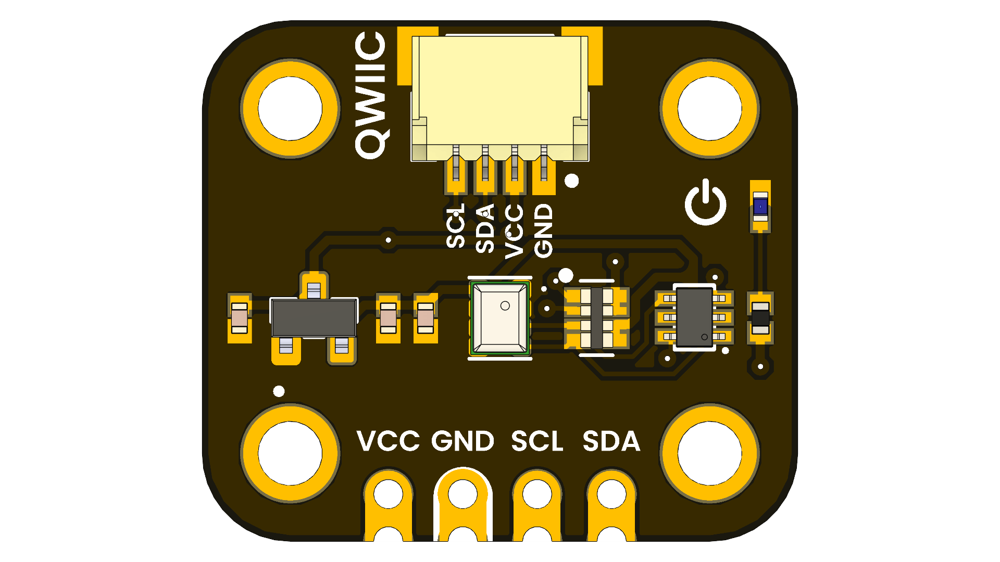

ICP-10111 Barometric Pressure Sensor Module
Introduction
The UNIT ICP-10111 Barometric Pressure Sensor Module is a compact and efficient sensor designed for high-accuracy atmospheric pressure measurements with low power consumption. Based on MEMS capacitive technology, this module offers ultra-low noise performance, exceptional relative accuracy, and stable sensor throughput. Ideal for weather monitoring, altitude measurement, and environmental sensing, it delivers industry-leading precision in demanding applications.

📦 Overview
| Feature | Specification |
|---|---|
| Pressure operating range | 30 to 110 kPa |
| Noise and current consumption | ULN mode: 0.4 Pa @ 10.4 µA LN mode: 0.8 Pa @ 5.2 µA LP mode: 3.2 Pa @ 1.3 µA |
| Pressure Sensor Relative Accuracy | ±1 Pa for any 10 hPa change over 950 hPa–1050 hPa at 25°C |
| Pressure Sensor Absolute Accuracy | ±1 hPa over 950 hPa–1050 hPa, 0°C to 65°C |
| Pressure Sensor Temperature Coefficient Offset | ±0.5 Pa/°C over 25°C to 45°C at 100 kPa |
| Temperature Sensor Absolute Accuracy | ±0.4°C |
| Temperature operating range | -40 °C to 85 °C |
| Host Interface | I2C at up to 400 kHz |
| Single Supply voltage | 1.8V ±5% |
| RoHS and Green compliant | Yes |
🚀 Getting Started
- Connect the board via USB-C to your computer.
- Install the appropriate board package for:
- Arduino IDE
- PlatformIO
- ESP-IDF / Pico SDK
- Flash a sample project or use one from
/software/examples - Power via USB or external battery (if supported)
🧪 Use Cases
- Weather stations
- Altitude measurement for drones and UAVs
- Environmental monitoring systems
- Indoor navigation and smart building systems
📚 Resources
{kind=link}
{kind=link}
{kind=link}
📝 License
All hardware and documentation in this project are licensed under the MIT License.
Please refer to LICENSE.md for full terms.
Template created by UNIT Electronics